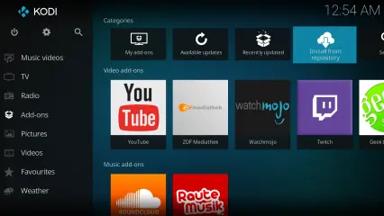
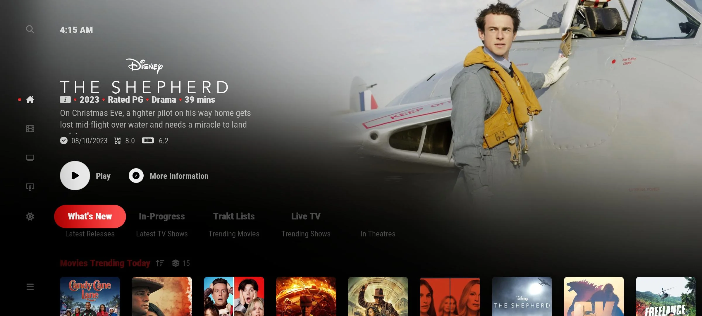

Toevallig in de week voor dat dit project begon ben ik benaderd door iemand die een ontwerp nodig had voor een Add-On voor Kodi. Het leek mij heel leuk om dit te doen voor Project X omdat ik voor een echt bedrijf werk en mijn ontwerp echt gebruikt gaat worden, ik kan zo ook usertests doen met echte mensen wat natuurlijk super vet is.
Kodi is een media center applicatie waarbij je video's, muziek, foto's en podcasts kan afspelen. Kodi is gemaakt voor alle platformen waardoor Kodi heel bekend is geworden. Waar Kodi echt in schijnt, is dat je de mogelijkheid hebt om Skins, Add-Ons en Plugins te installeren.
Add-ons zijn uitbreidingen die extra functionaliteit en mogelijkheden aan Kodi toevoegen. Deze add-ons zijn vaak integraties van bekende streaming-diensten zoals Netflix, YouTube SoundCloud, Spotify en Twitch. Hieronder zie je een Kodi 'build' met deze add-ons geïnstalleerd. Eigenlijk is Kodi dus een hub voor applicaties.
Skins zijn toevoegingen van Kodi waarbij de gebruiker gemakkelijk add-ons op de homepagina kan zetten. Hieronder zie je de Netflix add-on op de homepagina. Vaak zijn deze skins heel erg aanpasbaar.
De meeste mensen zijn uren lang bezig met het maken van de perfecte Kodi 'build'. Elke add-on duurt een tijd om te installeren en de configureren. Dit is niet zo erg als het maar een keer hoef, het probleem is dat veel gebruikers Kodi gebruiker op verschillende apparaten tegelijk, daar hebben we Preloader voor.
Preloader is een add-on voor Kodi waarbij je gemakkelijk voorgemaakte presets kan installeren, hierbij kun je kiezen uit skins, add-ons en plugins die vaak gebruikt worden in Kodi. Je kunt ook eigen builds maken en deze installeren op andere apparaten.
Hieronder zie je een video van hoe je add-on er zonder ontwerp uitzag. Je kunt zien dat je eigenlijk nergens een indicatie hebt wat de knoppen doen, je kunt ook nergens zien je hoe je functionaliteiten van de add-on kan gebruiken.
Voordat ik begon met dit project had de stakeholder in Figma zelf een ontwerp gemaakt waarbij al duidelijk te zien hoe je door de drie functies van de add-on kunt navigeren (Presets, Backup en Cloud). De stakeholder vond echter dat dit ontwerp nog steeds niet modern en bruikbaar was.
Eerst heb ik gekeken naar het oude ontwerp, zo ben ik in overleg geweest met de stakeholder over wat er aangepast moet worden. Uit dit gesprek is gebleken dat de stakeholder een nieuw ontwerp wilt waarin goud en zwart terugkomt, ook wil de stakeholder een nieuw ontwerp die wat duidelijk is. In dit ontwerp komen drie functies (Presets, Backups en Cloud).
Online vond ik een ontwerp van Logitech waar ik graag mijn inspiratie vandaag wil halen, zoals je kan zien gebruikt dit ontwerp een padding rondom het scherm, ook wil ik gebruik maken van rondingen bij mijn knoppen en dropdown menu's. Met een app op mijn macbook kan ik gemakkelijk icoontjes downloaden en gebruiken wat ook heel handig is.
Door gebruik te maken van FontShare heb ik het lettertype Satoshi gevonden, dit lettertype vind ik er een beetje lofi uitzien wat ik wel vet vind. Dit lettertype is ook gratis dus dat is helemaal mooi. Later kreeg ik te horen van de stakeholder dat het niet mogelijk is om een eigen lettertype te gebruiken in Kodi.
In Adobe Illustrator ben ik begonnen met het ontwerpen van het nieuwe logo. Ik heb gebruik gemaakt van de 'P' en 'L' in preloader, ik heb deze twee letters over elkaar gezet en zo is dit logo eruit gekomen. Met Adobe Illustrator kun je ook gemakkelijk een gradient toevoegen aan het logo, dit heb ik hierna gedaan om het logo wat meer diepte te geven.
Op YouTube zag ik een tutorial voor Auto Layout. Dit is een functie in figma om een responsive ontwerp te maken. Het leek me leuk om dit te leren dus heb ik dit voor het eerst toegepast aan mijn ontwerp. Ik heb eerst nagedacht over de indeling van elke pagina. Hieruit is gekomen dat elke pagina een header heeft waarin de naam van het project of de naam van de functie staat. Aan de rechter kant van de header komen knoppen te staan om meer informatie over de functie te krijgen of de functie af te sluiten. In de body komt de functionaliteit van het scherm te staan, denk hierbij aan een dropdown, of teksten etc. In de footer komen knoppen te staan om door de schermen heen te navigeren.
Ik ben begonnen met het maken van het homescherm zoals je hierlangs kan zien. Zoals je kan zien heb ik twee versies gemaakt om aan de stakeholder te laten zien. Het scherm begint met een header waarin de naam van het project staat en een knop staat om het scherm af te sluiten, in de body staat een kleine introductie over de add-on en in de footer staan vier knoppen om door de functionaliteiten van de add-on te navigeren.
Ik heb het homescherm ontwerp aan de stakeholder voorgelegd. De stakeholder was heel blij met het kleurenpalet van het zwart en gouden scherm, ook vond de stakeholder de logo's mooi en wilde deze logo's graag gebruiken in het ontwerp. Met deze informatie ga ik de eerste functie maken (Presets functie)
Als je vanuit het homescherm op de 'presets' knop klikt zul je op een nieuwe pagina moeten komen waarbij je een skin kan kiezen die je wil gebruiken. De meeste skins zijn heel zwaar voor het apparaat, daarom kun je kiezen uit drie opties (Light, Medium en Heavy). Als je voor de light optie gaat, heb je alleen de belangrijke widgets in de skin zitten. Als je voor heavy gaat krijg je extra widgets die handig zijn om te hebben, hiernaast kun je verschillende skins, add-ons, widgets en scripts toevoegen aan de preset, als je dit allemaal hebt gedaan kom je op een scherm waarbij je kan kiezen welke add-ons je wilt gaan overschrijven. Ook kom je op een scherm waarbij je een overview krijgt van alle add-ons die je gaat installeren.
Ik heb de preset manager functie voorgelegd aan de stakeholder. De stakeholder vond deze functie er al heel goed uit zien. Hij was het met alle ontwerpkeuzes eens en wilde graag de andere functionaliteiten terug zien, daarom ben ik daarna meteen aan de slag geweest om deze te ontwerpen.
Met de backup manager functie kun je gemakkelijk eigen backups maken en installeren. Deze functie werkt eigenlijk hetzelfde als de presets manager functie. Het enige verschil is, is dat je eigen add-ons kan toevoegen aan de 'build'.
De meeste Kodi gebruikers hebben een Google TV. Met een Google TV kun je niet zo gemakkelijk builds downloaden en installeren op het apparaat, daarom hebben we een cloud functie bedacht. Als de gebruiker een build maakt kan de gebruiker deze via de cloud op bijvoorbeeld dropbox zetten. Nadat de gebruiker dit heeft gedaan kan de gebruiker op de Google TV weer inloggen bij dropbox en staat de build in de cloud. Dit is heel makkelijk om builds door te sturen naar andere apparaten zonder veel extra stappen.
Je krijgt de mogelijkheid om met drie cloud services te verbinden (Dropbox, Google Drive en iCloud). Dit zijn de meest gebruikte cloud services die eigenlijk iedereen wel heeft daarom hebben we deze toegevoegd, nadat de gebruiker is ingelogd kun je gebruiker de gemaakte builds opslaan in de cloud. Preloader zal dan een map aanmaken genaamd Kodi. Hier komen dan alle builds in te staan zodat ze nooit verloren gaan.
In overleg met de stakeholder zijn we eruit gekomen dat we nog een ding missen, en dat zijn informatie schermen. Voor de gebruiker is het natuurlijk altijd handig om te zien wat de gebruiker nu precies gaat installeren, daarom heb ik een scherm gemaakt waar de gebruiker naartoe kan navigeren als de gebruiker op de info knop klikt die bij elke functie voorbij komen.
Zoals je hierlangs kan zien heb ik dit scherm gemaakt door weer gebruik te maken van een header, body en footer. In de header staat de naam van onze add-on en een afsluit knop. In de body staat de naam type add-on, naam en uitleg over de add-on. Ook zie je een foto van de add-on. In de footer staat een knop om deze add-on gemakkelijk toe te voegen aan de build.
Ik heb dit ontwerp aan de stakeholder later zien. Ik kreeg uit dit gesprek te horen dat het moeilijk was om eigen foto's toe te voegen aan de add-on omdat sommige wel 10 seconde duurde voordat ze waren ingeladen. Wat ik wel kan doen is de foto's importeren van de repositories, daarom heb ik een nieuw ontwerp gemaakt die je hieronder kan zien.
Hierlangs zie je twee varianten van het nieuwe ontwerp. De ontwerpen zijn bijna hetzelfde ik heb alleen gekeken hoe ik de repository naam kan laten zien en de foto die hierbij hoort. Deze heb ik weer aan de stakeholder laten zien. De stakeholder vond de rechter beter passen bij het ontwerp, daarom heb ik deze gekozen als laatste ontwerp.
Al in al ben ik echt heel trots op dit ontwerp. Ik ben vaak in gesprek geweest met de stakeholder om er precies achter te komen wat voor ontwerp de stakeholder voor ogen had. Ik heb ook veel nieuwe dingen geleerd binnen Figma. Denk hierbij aan Auto Layout en Component. Dit wil ik ook vaker in mijn Figma ontwerpen toepassen. De stakeholder gaat nu de add-on opnieuw maken met mijn ontwerp. Als de stakeholder hier klaar mee is wil ik nog graag usertests doen met echte gebruikers wat me echt vet lijkt.